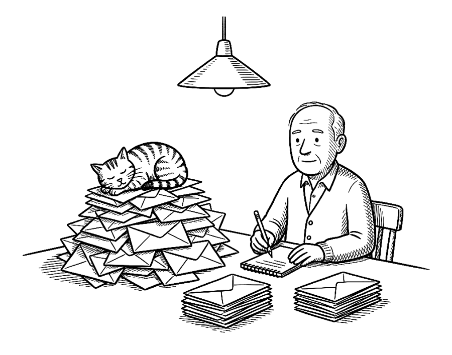

Every letter, request and statement in the book, as plain text. Copy it, fill in the brackets, send it.
These are from Health: A User's Guide, a book about using American health care from the patient's side. Most of what a patient is owed arrives only when someone asks for it in writing: the itemized bill, the hospital's discount for people who can't pay, the file an insurer used to say no, the chart itself. The asking works more often than people expect. In a national survey, people who called about a bill they thought was wrong got it corrected about three times in four. Of Medicare Advantage denials in 2024, about one in nine was appealed, and eight in ten of those appeals won in full or in part.

“Ironically, the bill is for a cat scan.”
How to send any of these. Replace every [bracket] with your own details and delete the brackets. Send it by a route that leaves a date: the plan's or practice's online portal, email, or certified mail. Keep a copy, write the date you sent it on your calendar, and put a reminder two weeks later to follow up. None of this is legal advice; where a lot is at stake, a legal-aid office can check the wording for your state.
The chatbot prompts from the book, including one that sets a chatbot up to organise your records, reminders and requests, are on their own page: Prompts.
When and why Before a new doctor, a second opinion or an appeal, or to check what your chart says. You're entitled to copies within thirty days. Chapter 8 of the book, Your Records Are Yours. To The records office (sometimes called health information management) of the practice or hospital, or the records-request form in its portal. How to send it The way the office says it takes requests; the portal or email where it accepts them. Keep The request and its date: the thirty days run from when they receive it.
I am requesting copies of my health information under 45 C.F.R. § 164.524: [all visit notes, results, imaging reports and images, operative and pathology reports, and billing records from (date) to (date)]. Please provide them in [electronic format / through the portal / on a disc], within thirty days. If there is a fee, please tell me the amount before preparing the copies. [Name, date of birth, address, phone.]
When and why A hospital bill has arrived as totals. You want the lines before you pay anything. Chapter 3 of the book, The Bill After, and the Debt. To The hospital's billing office (often called patient financial services). How to send it Portal or email. A phone call works but leaves no date. Keep The request date and the itemized bill when it comes. Don't pay until it does.
Regarding account [number] for services on [date]: before I pay, please send an itemized statement listing every charge with its CPT or HCPCS code, revenue code, quantity and price, and a copy of your financial assistance policy and application. Please hold the account from collection while I review it. [Name, account number.]
When and why Your income may qualify you for a discount or free care. A complete application pauses collection. Chapter 3 of the book, The Bill After, and the Debt. To The financial-assistance or financial-counselling office named in the hospital's policy. How to send it However the policy says, often by upload or post. If you email it, ask for confirmation that it's complete. Keep A copy of the application and everything enclosed, and proof of the date it arrived. You have 240 days from the first bill to apply.
Enclosed is my application for financial assistance under your policy, for account [number]. I understand that while a complete application is pending, extraordinary collection actions must be suspended under 26 C.F.R. § 1.501(r)-6. Please confirm receipt, tell me if anything is missing, and let me know your decision in writing. If I qualify, please refund any amount I have paid above the discounted amount.
When and why You paid for yourself, had a written estimate, and the bill came in more than $400 higher. Chapter 29 of the book, The Price Before. To The provider's billing office first; then the federal patient-provider dispute process. How to send it Email or portal to the provider. The federal dispute is started through the government's own form, within 120 days of the bill. Keep The estimate itself, the bill, and the dates of each.
I received a good-faith estimate from you dated [date] of $[amount] for [service]. Your bill dated [date] is $[amount], which is more than $400 above the estimate. Please explain the difference and adjust the bill to the estimate. If we cannot resolve it, I intend to start patient-provider dispute resolution under the No Surprises Act within 120 days of the bill.
When and why A collection agency has written about a medical debt you don't recognise or haven't been shown. Chapter 3 of the book, The Bill After, and the Debt. To The collection agency, at the address or email on its notice. How to send it In writing, within the validation period on its notice. Email or its website counts if it accepts messages from consumers that way; otherwise certified post. Keep The agency's notice, your dispute, and proof of the date you sent it.
I dispute the debt described in your letter dated [date], reference [number]. Under the Fair Debt Collection Practices Act, please send written verification: the name of the original creditor, the dates of service, an itemized statement of the charges, and proof that you are authorized to collect this debt. Please stop collection until you have done so. I am also applying to [hospital] for financial assistance. [If you wish:] Please do not contact me at work.
When and why The plan has said no to a treatment, a test or a claim. Chapter 28 of the book, No: Who Decides, and How to Appeal. To The appeals address printed on the denial letter. How to send it Exactly as the denial letter says: post, fax or portal. Email only if the letter lists it. Most employer plans allow 180 days. Keep A copy of the whole packet, the fax confirmation or tracking number, and the deadline on your calendar.
This is a formal appeal of the denial dated [date], reference [number], for [service] for [patient]. The plan's criterion [quote the criterion] is met by [chart entry, date, page], and [next criterion] by [entry]. My physician's letter of medical necessity is enclosed. I request review by a physician in [specialty]. [If urgent:] Because delay would seriously jeopardize my health, I request expedited review. Please send me the complete claim file and the criteria relied on if you have not already done so.
When and why The plan has upheld its denial after the internal appeal. Chapter 28 of the book, No: Who Decides, and How to Appeal. To The office named in the final denial: your state's insurance department or the federal review process. How to send it That office's own form or website, within four months. Keep Copies of everything sent, and the case number it gives you.
I request independent external review of the final internal denial dated [date], reference [number], under [my state's / the federal] external review process. The denial concerns [medical necessity / an experimental-treatment determination / a rescission]. Enclosed are the denial letters, my appeal, and the supporting medical records. [If urgent:] I request expedited review because delay would seriously jeopardize my health.
When and why A drug you need isn't covered, is on a high tier, or requires trying another first. Chapter 30 of the book, Drugs for Less. To The plan's pharmacy-benefit or coverage-determination unit (the pharmacy number on your card), with the prescriber's statement. How to send it Usually the prescriber's office submits it by fax or portal. A Medicare drug plan must also take the request by phone. Keep The date it was submitted; the plan's decision clock starts then.
I request an exception to cover [drug, dose] [which is not on the formulary / at a lower tier / without the step-therapy requirement]. My prescriber's statement is enclosed, explaining that [the formulary alternatives were tried and failed / would be less effective / would cause adverse effects]. [If urgent:] I request an expedited decision because waiting could seriously jeopardize my health. Please respond in writing.
When and why A plan or provider has failed to fix a problem after you've written twice. To The regulator that covers it: the state insurance department, the Department of Labor, or another office in Appendix F. How to send it Usually the regulator's online complaint form, with this letter pasted in or attached. Keep The complaint or case number.
I am filing a complaint against [plan / hospital / provider], [identifier]. On [date], [what happened, in two or three sentences]. I have [appealed / written to them on (dates)] and [the result]. Copies of the letters are enclosed. I am asking you to [review the denial / investigate the practice / require a response]. Please send me a complaint or case number.
When and why The plan's directory has no one who can see you within its own access standard. Chapter 32 of the book, Getting Seen. To The plan's member services or utilization-review department, with a copy to the regulator. How to send it Portal or fax, with the call log attached. Keep The call log with dates, names and answers, and dated screenshots of the directory.
I am requesting a network gap exception. My plan's access standard for [specialty] is [X miles / X business days]. Between [dates] I contacted [number] in-network providers listed in your directory, and none could see me within that standard; the calls are listed on the attached page with dates, numbers and responses. I have identified [name, credentials, address], who is willing to treat me and bill the plan. Please authorize out-of-network care with [name] at in-network cost sharing, in writing, by [date]. I am copying [the state insurance department / the Department of Labor].
When and why Your doctor or hospital is leaving the network in the middle of your treatment. Chapter 32 of the book, Getting Seen. To The plan. How to send it Portal or post, as soon as you learn of the change. Keep The plan's written confirmation and the end date of the ninety days.
I am a continuing-care patient under the No Surprises Act. My [doctor / hospital], [name], is leaving the network on [date], while I am [in treatment for a serious and complex condition / pregnant / scheduled for non-elective surgery / terminally ill]. I elect transitional continuity of care for up to ninety days at in-network cost sharing. Please confirm in writing.
When and why You're a Medicare inpatient, you've been told you're going home, and you think it's too soon. Chapter 20 of the book, Getting Out, and Getting Better at Home. To The quality-improvement organization named on your Important Message from Medicare notice; a copy to the hospital's case manager. How to send it Call first, no later than the day of discharge: the request may be made by phone or in writing. Then send this letter by fax or email to confirm. Keep The time of the call, the name of the person you spoke to, and the reference number.
This confirms that on [date] at [time] I asked [quality-improvement organization] to review my discharge from [hospital], planned for [date], under 42 C.F.R. § 405.1206, before leaving the hospital. My reference number is [number]. I understand I may not be charged for the days while the review is pending, other than my usual cost sharing. [Copy to the hospital's case manager.]
Before a planned procedure: to the surgeon's office
Weeks before the date, by email or the portal, so the answer comes back in writing. Send the surgeon's office letter first; it gives you the names and codes the other two need.
For [procedure] on [date] at [facility]: please give me the CPT codes you'll bill, and tell me whether the stay will be inpatient or outpatient. Please confirm that the prior authorization has been approved, with its reference number. And please give me the names of the anesthesia group, any assistant surgeon, the pathology lab, and the supplier of any equipment I'll take home.
Weeks before the date, by email or the portal, so the answer comes back in writing. Send the surgeon's office letter first; it gives you the names and codes the other two need.
Please confirm in writing that [surgeon], [facility], [anesthesia group], [assistant], [lab] and [equipment supplier] are in network for my plan on [date]. Please also tell me what's left of my deductible and my out-of-pocket maximum this year, my coinsurance, and the allowed amounts for codes [codes] at [facility]. [Reference number for the call.]
Before a planned procedure: to the hospital or surgery centre
Weeks before the date, by email or the portal, so the answer comes back in writing. Send the surgeon's office letter first; it gives you the names and codes the other two need.
Before the procedure, please tell me whether any clinician involved is out of network. I don't intend to sign a notice and consent waiving my protections under the No Surprises Act. If your self-pay price for [procedure] is lower than my share under my plan, please tell me what it is.
To the surgeon's office and the facility, before you schedule, if you're uninsured or will pay the whole bill yourself.
I'm planning [procedure, CPT code if known] with [surgeon], and I'll be paying as a self-pay patient. Before I schedule, please send me, in writing: (1) one all-inclusive price covering the surgeon, anesthesia, the facility, [implants,] [pathology,] and follow-up visits for [number] days; (2) what the price excludes, and what a complication or an overnight stay would cost; (3) when payment is due, and whether it's refundable if the procedure is cancelled; and (4) the good-faith estimates for each provider that the law requires for self-pay patients. I'm comparing this with [other facility / my plan's allowed amount] before I decide. [Name, phone.]
To HR or the benefits administrator, before you ask the hospital for anything.
I'm planning [procedure] in [month]. Does our plan include a centre-of-excellence or travel-surgery benefit, a bundled-price programme, or a case manager for planned surgery? If it does, please send me the programme's terms: which hospitals, what cost sharing I'd pay, what travel is covered for me and a companion, and how follow-up care and complications are handled after I return. If it doesn't, please tell me whether our plan is self-funded, and whether the plan will consider a single-case agreement with [facility] at [price].
To HR, a benefits committee, or a union trustee, by email. The first three are for anyone; the last three ask what the plan pays.
Is our plan self-funded or fully insured? Who is the plan administrator, and who is the named fiduciary? Can I have the plan document, not the summary?
Is there a centre-of-excellence programme, a second-opinion service, or a case manager for planned surgery or a serious diagnosis?
If the administrator denies a claim, does the company ever review it? Who do I write to?
Have we asked the administrator for our claims data since the 2021 law required them to provide it? What do we pay our largest hospitals as a percentage of Medicare?
What does our pharmacy-benefit manager pay for our ten most-used generic drugs, and what do they cost at a pharmacy without insurance?
What is our broker or consultant paid, and by whom? The 2021 law requires them to tell us.
"Keep me alive by every means that works." Use your state's own advance-directive form, and attach this as your statement of wishes or copy it into the form's space for instructions. Sign it the way your state requires, with witnesses or a notary. Then send copies to your proxy, your alternate, every doctor you see regularly, and the hospital you'd most likely be taken to, and keep a list of who has one.
STATEMENT OF MY WISHES
1. My proxy. I name [name, relationship, phone] as my health-care agent, and [name, phone] as my alternate if [he / she / they] cannot serve.
2. What I want. If I cannot speak for myself, I want every treatment that may prolong my life, including resuscitation, a breathing machine, dialysis, and artificial nutrition and hydration, for as long as my doctors believe it may keep me alive. [Exceptions, if any.]
3. When it stops. I want treatment continued until my doctors agree that it can no longer prolong my life, [and until my proxy agrees / and I ask that my proxy be given a second opinion before any treatment is withdrawn].
4. Comfort. I want my pain and distress treated, even while every other treatment continues.
5. What matters to me. [Faith, community, any clergy or tradition to be consulted. Where I want to be.]
6. For my proxy. When a question comes up that this document doesn't answer, choose the course more likely to keep me alive.
"Treat me to recover; if I can't, keep me comfortable." Use your state's own advance-directive form, and attach this as your statement of wishes or copy it into the form's space for instructions. Sign it the way your state requires, with witnesses or a notary. Then send copies to your proxy, your alternate, every doctor you see regularly, and the hospital you'd most likely be taken to, and keep a list of who has one.
STATEMENT OF MY WISHES
1. My proxy. I name [name, relationship, phone] as my health-care agent, and [name, phone] as my alternate.
2. The life I'd want to return to. I would want treatment that is likely to return me to a life in which I can [recognize the people I love / speak with them / live outside a hospital or nursing facility / other, in my words].
3. A trial first. If it's uncertain whether treatment will return me to that life, I want it tried for [a number of days or weeks, or "as long as my doctors think a fair trial takes"], then reviewed with my proxy.
4. When it's unlikely. If my doctors believe it is unlikely I will return to that life, I do not want [resuscitation / a breathing machine / dialysis / artificial nutrition / hospital admission], and I want care focused on comfort, with palliative care or hospice, [at home / wherever I am].
5. Comfort. I want my pain and distress treated fully, even if the treatment may shorten my life.
6. What matters to me. [People to be with me. Music, faith, place. Anything I'd want to avoid.]
7. For my proxy. When this document doesn't answer a question, decide as you believe I would, and don't carry the decision as your own.
"Once my life is unlikely to be one I'd enjoy, don't prolong it." Use your state's own advance-directive form, and attach this as your statement of wishes or copy it into the form's space for instructions. Sign it the way your state requires, with witnesses or a notary. Then send copies to your proxy, your alternate, every doctor you see regularly, and the hospital you'd most likely be taken to, and keep a list of who has one.
STATEMENT OF MY WISHES
1. My proxy. I name [name, relationship, phone] as my health-care agent, and [name, phone] as my alternate.
2. The line. I do not want my life prolonged once my doctor and my proxy agree that I am unlikely ever again to [recognize the people I love / hold a conversation / read, or follow a story / live outside a nursing facility / other signs, in my words].
3. Past the line, I refuse. Resuscitation; a breathing machine; dialysis; surgery; transfer to a hospital, unless it's the only way to relieve my suffering; antibiotics and other treatment for infections such as pneumonia; and artificial nutrition and hydration.
4. Food and drink. [I want food and drink offered only when I show that I want them, for comfort, and never pressed on me. / I do not want to be fed by hand.] Opening my mouth when food is offered is not consent to being kept alive by it.
5. Comfort. I want my pain, breathlessness and distress treated fully, with hospice care, even if the treatment may shorten my life.
6. What I mean by a life I'd enjoy. [In my own words, while I can still write them.]
7. For my proxy. If, past this line, I seem content, [follow this document anyway: I wrote it knowing I might / let my contentment count, and decide as you think best].
"I trust them more than I trust a form." Use your state's own advance-directive form, and attach this as your statement of wishes or copy it into the form's space for instructions. Sign it the way your state requires, with witnesses or a notary. Then send copies to your proxy, your alternate, every doctor you see regularly, and the hospital you'd most likely be taken to, and keep a list of who has one.
STATEMENT OF MY WISHES
1. My proxy. I name [name, relationship, phone] as my health-care agent, and [name, phone] as my alternate. I want my proxy's decisions followed even if other members of my family disagree.
2. Authority. My proxy may make any health-care decision I could make, including to start, refuse, or stop any treatment, including artificial nutrition and hydration, [and to see my medical records and speak with any of my clinicians].
3. What I've told them. I've talked with my proxy about what matters to me. In short: [two or three sentences in my own words].
4. Comfort. Whatever else is decided, I want my pain and distress treated.
5. For my proxy. Decide as you believe I would. If you can't tell, decide what you believe is best for me. Whatever you decide, I've chosen you to decide it, and I'm grateful.